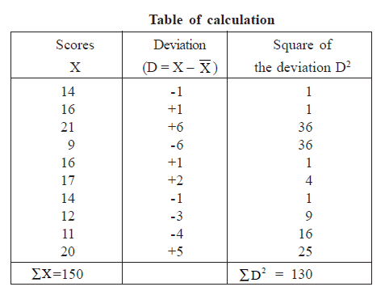
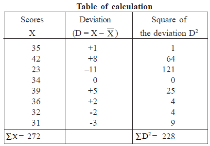

| Home | |
| SEARCH |
1) Calculate the Variance and Standard Deviation of the following 10 scores.14, 16, 21, 9, 16, 17, 14, 12, 11 and 20. Also interpret the results. Solution : The number of observations = N = 10 (i) Find the arithmetic mean by using Mean =X=ΣX/N =150/10 The average score = 15 (ii)Find the variance by using Variance =1/NΣD2 Variance=1/10(130) =13 2)The runs scored by a batsman in eight innings are given as 35, 42, 23, 34, 39, 36, 32 and 31 Find (i) the average score and (ii) the standard deviation of scores. How do you interpret the results? Solution : The number of individual observations = N = 8  i) Arithmetic Mean=X=ΣX/N =272/8 =34 Arithmetic Mean = 34 The average of runs scored by the batsman is 34 and on an average, the individual scores deviate from the average score by 5.34 runs. |